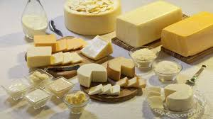
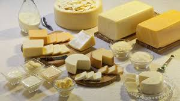

A fazenda da Família Gotardo, vem através de gerações produzindo os melhores grãos
na régio do Sul do País e por vários anos
vêm investindo em tecnologia no plantio e agora no trato dos animais.
Aumentando assim a sua qualidade no produto final, que já foi premiado diversas vezes.

Na fazenda Gotardo, são utilizadas as mais novas e modernas
tecnologias disponíveis no mercado, para o cuidado da plantação,
sustentabilidade e rodizio da plantação, aproveitando ao máximo
os insumos e as sementes, através do Rodizio da plantação.

Nossos produtos derivados do leite, são de qualidade de exportação, com as melhores avaliações e todos certificados pela
Vigilância Sanitária
e
Ministério da Agricultura
 
Todo animal que vai para o frigorifico para o abate, passa por diversas etapas desde o seu nascimento até o abatimento, onde são controlado todo e qualquer tipo de vacinação, e evolução do gado.


Nossa gama de clientes, vai desde o pequeno comercio
até as grandes empresas, seguimos
exportando nossos produtos para mais de 7 países.